The Choose-Your-Own-Adventure Calculus
Tomas Petricek, Jan Liam Verter & Mikolas Fromm
Charles University, Prague

Demo
F# type providers
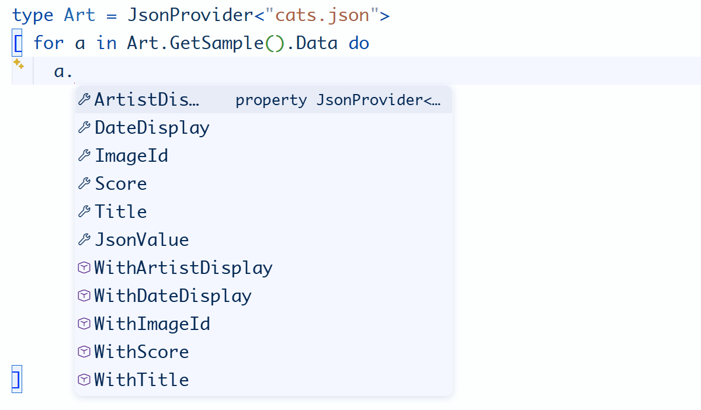
Type providers
Not just a programming language feature
Dot-driven development
(Phil Trelford)
Type dot and choose from auto-complete!
Paradigm shift
From languages to systems
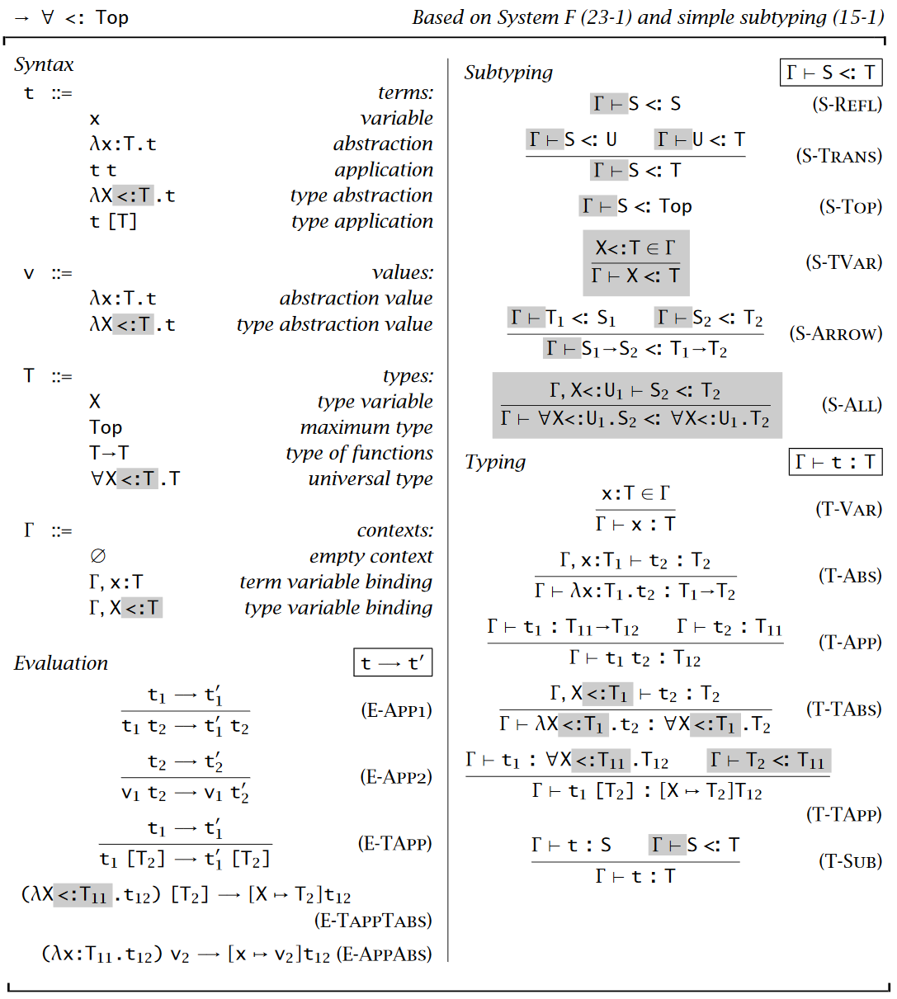
Programming Languages
Programming is
writing code
Formal semantics, implementation, paradigms, types
We know how
to study this!
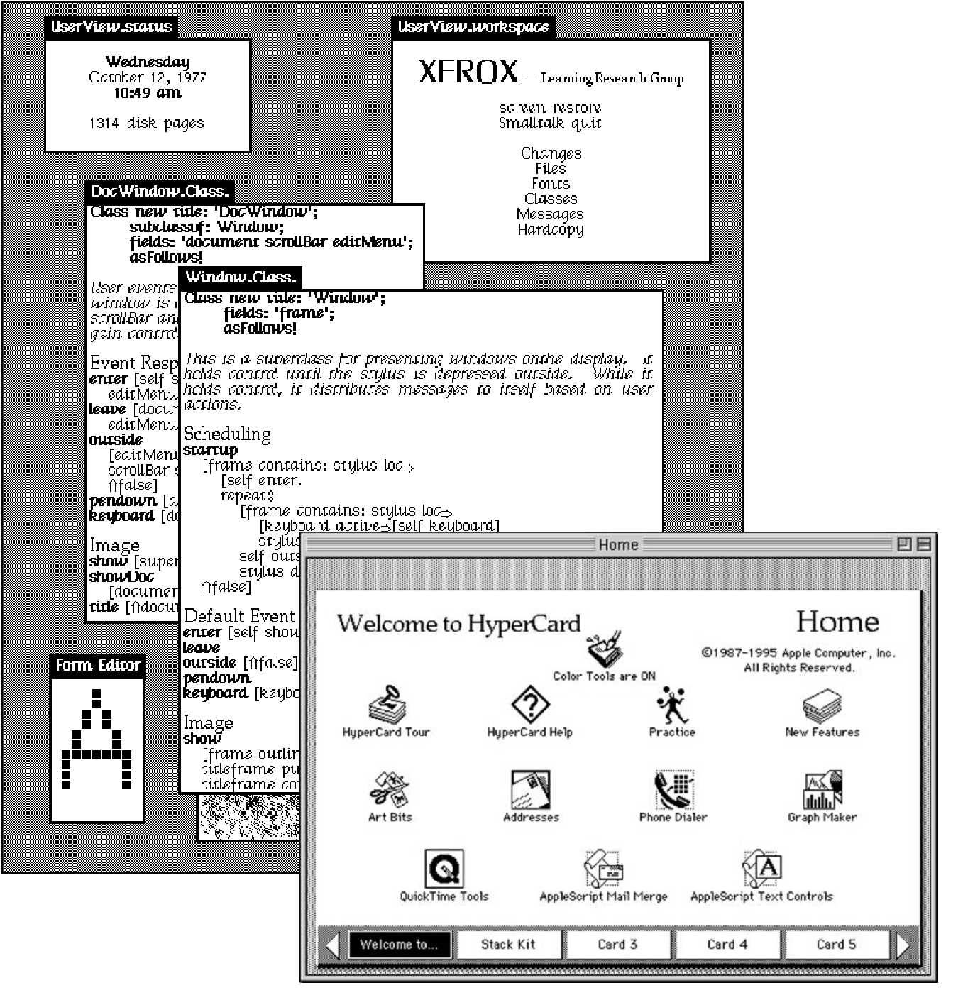
Programming Systems
Interacting with a stateful system
Feedback, liveness, interactive user interfaces
But how do we
study this?
Problem
Theory of programming systems
Theory of programming systems
Design space
Technical dimensions
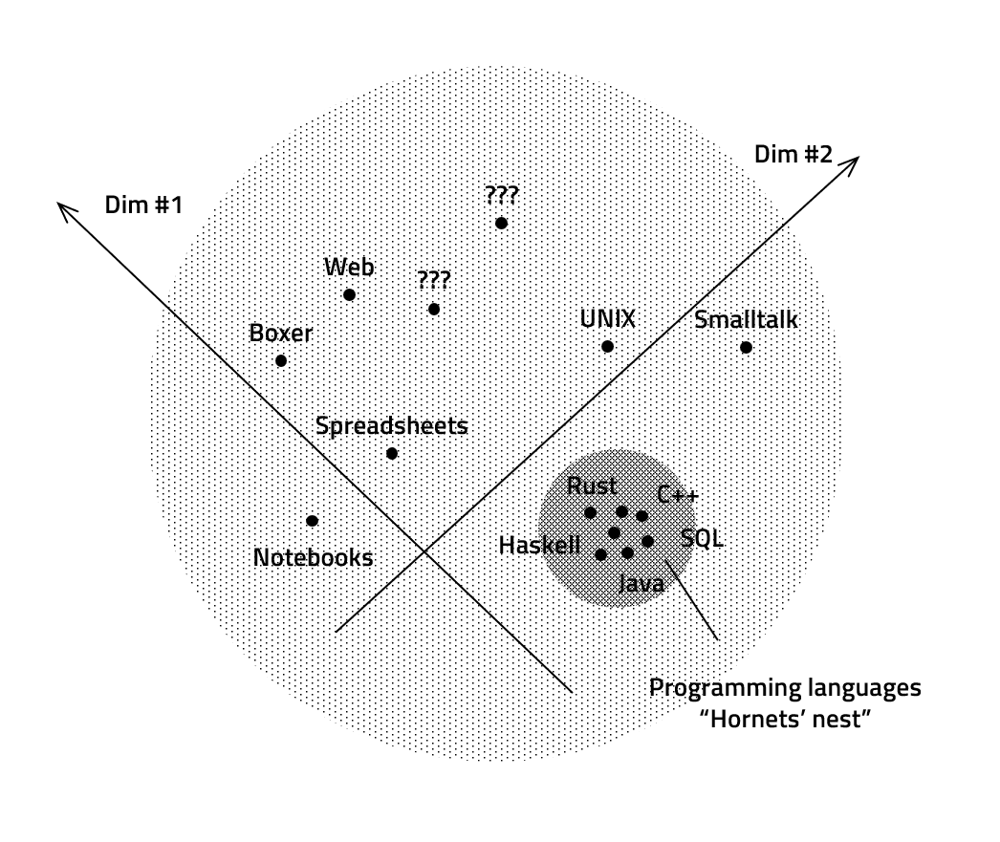
Formal models
Like this work
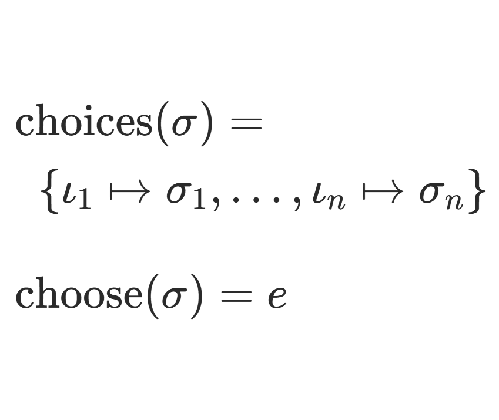
Demo
Data exploration
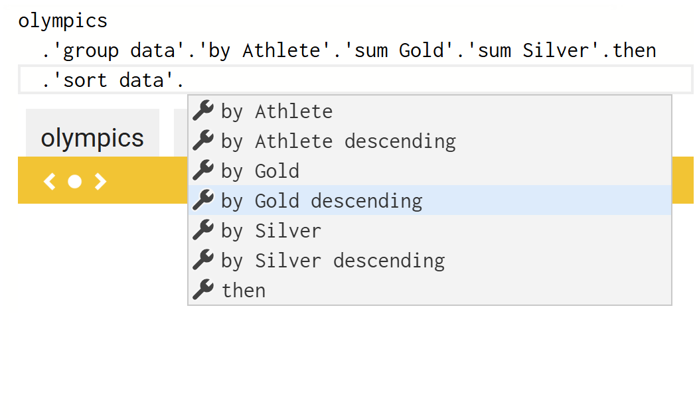
Data exploration
in The Gamma
Correct and complete
Can construct all
possible programs
All constructed
programs are correct
The choose-your-own-adventure calculus
Given expressions \(e\in \mathbb{E}\) and states \(\sigma \in \Sigma\)
Choose returns a program for a given state
- \(\text{choose}(\sigma) = e\)
Choices returns choices for a given state
- \(\text{choices}(\sigma) = \{\iota_1\mapsto\sigma_1, \ldots, \iota_n\mapsto\sigma_n\}\)
Examples
What fits the formalism
Structure editors
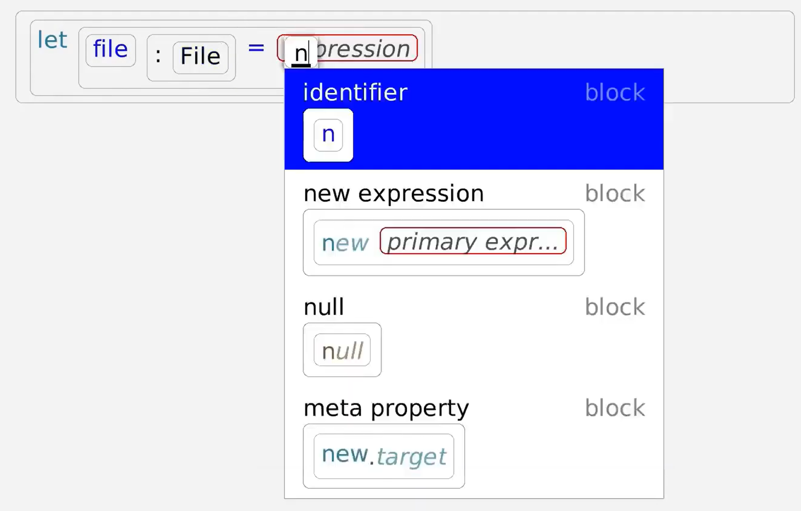
State is the expression
- Sequence of symbols \(s\)
- Either terminals \(t\)
- Or non-terminals \(n\)
Grammar for completions
- \(\text{choose}(\boldsymbol{s}) = \boldsymbol{s}\)
- \(\text{choices}(\boldsymbol{t}\, n\, \boldsymbol{s}) = \{\; \iota_i \mapsto \boldsymbol{t}\,\boldsymbol{s_i}\,\boldsymbol{s} ~|~ \forall (n\mapsto\boldsymbol{s_i})\in \mathcal{P} ~\}\)
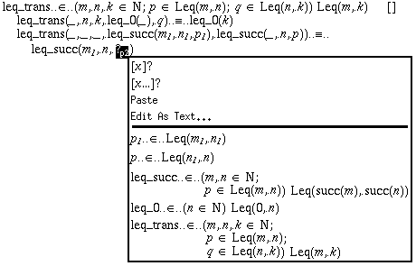
Tactic-based theorem provers
State is a proof
term with holes
Completions offer tactics applicable
to the first hole
Demo
AI assistants
AI assistants
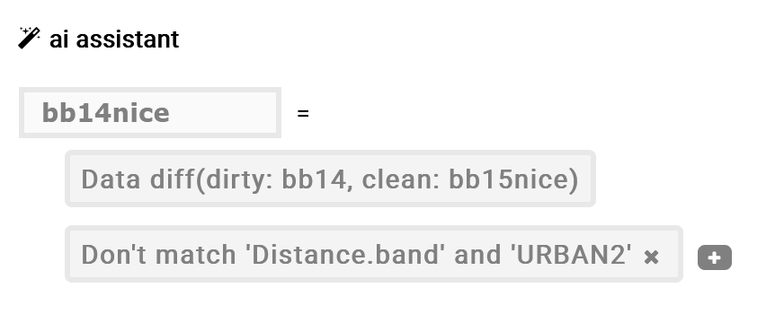
What defines an AI assistant
- Set of constraints \(\boldsymbol{C}\)
- Scoring function \(Q_{\boldsymbol{C}}\)
- Set of matching expressions \(E_{\boldsymbol{C}}\)
Choose-your-own-adventure system
- \(\text{choose}_X(\boldsymbol{C}) = \argmax_{e \in E_{\boldsymbol{C}}} Q_{\boldsymbol{C}}(X, e)\)
- \(\text{choices}_X(\boldsymbol{C}) = \{\iota_1 \mapsto \boldsymbol{C}\cup\{ c_1 \}, \iota_2\mapsto\boldsymbol{C}\cup\{ c_2 \}, \ldots\}\)
Understanding
Formal properties
Correctness
Subset of correct expressions \(\mathcal{E}\subseteq E\)
System is correct with respect to \(\mathcal{E}\) if and only if:
- \(\forall \sigma_1,..,\sigma_n\) and \(\iota_1,..,\iota_n\) such that \(\iota_i\mapsto\sigma_i \in \text{choices}(\sigma_{i-1})\) it is the case that \(\text{choose}(\sigma_i) \in \mathcal{E}\).
Completeness
Subset of correct expressions \(\mathcal{E}\subseteq E\)
System is complete with respect to \(\mathcal{E}\) if and only if:
- \(\forall e \in \mathcal{E}\,.\,\exists \sigma_1, \ldots ,\sigma_n\) and \(\iota_1, \ldots,\iota_n\) such that \(\iota_i\mapsto\sigma_i \in \text{choices}(\sigma_{i-1})\) and \(e=\text{choose}(\sigma_n)\).
Properties
Interesting lessons learned
- Correctness fails for multi-step construction
- Weaker eventual correctness property
- Useful heuristic systems may lack both
- More properties like uniqueness
Applications
AI integration
AI integration
Guide, not automate
- User writes what they need
- AI makes or recommends choices
- User reviews what's happening
- Can this work in practice?
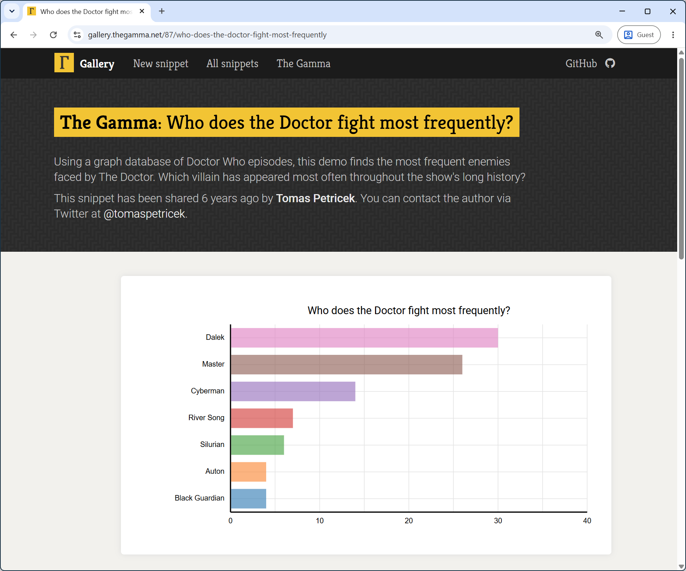
The Gamma
Data cube navigation, database aggregation, querying
~75 snippets with English summary
From before AI era!
// Most frequently fought
// enemeies of Dr Who
let topEnemies =
// Graph database query
drWho.Character.Doctor
.'ENEMY_OF'.'[any]'
.'APPEARED_IN'.'[any]'
.'explore_properties'.explore
// SQL-like aggregation
.'group data'.'by 1-name'
.'count distinct 2-name'.then
.'sort data'
.'by 2-name descending'.then
.paging.take(7).'get series'.
'with key 1-name'.'and value 2-name'
Dr Who analysis
Specific patterns for each data source
[any] for graph query
then for aggregation
Names can get ugly and complex
Choose-your-own-adventure with AI
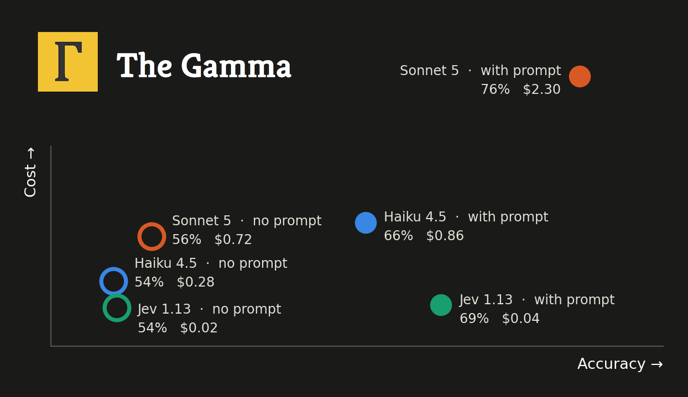
Prompting chat-based LLM
The user wants to ... they selected ... next options are ... What should they choose next?
TypeSafe "System One" Jev
- Stealth start-up builds AI for my theory!
- Ranks given answers to an English prompt
- Cheaper and faster than general LLMs
AI as a transparent guide
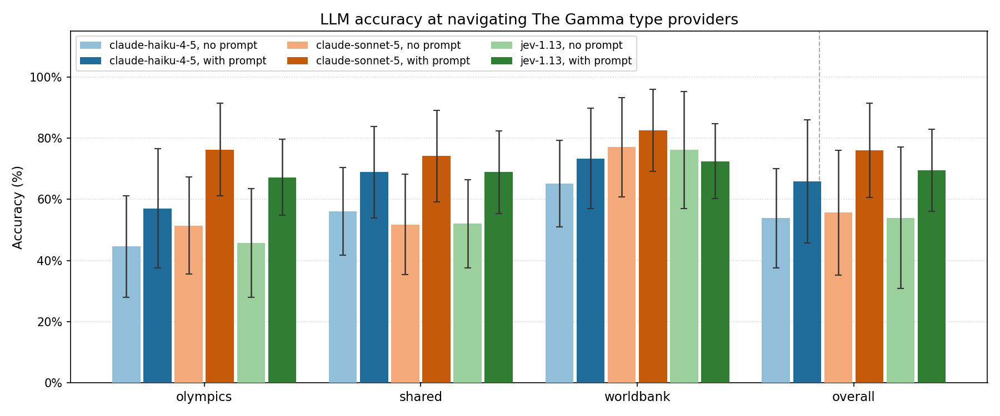
Useful but expensive and unreliable!
Not enough to "take back control"
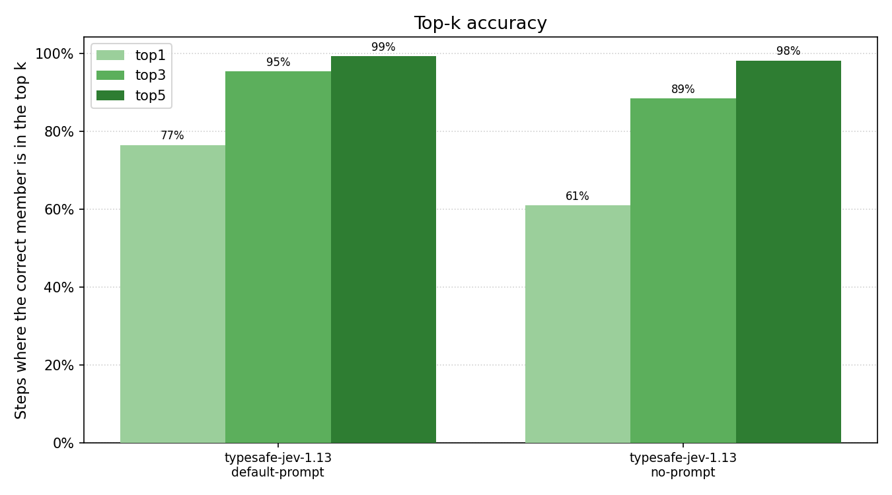
Jev's ranking
Assigns probability
to given options
How often is the answer in top 3?
Auto-select if the system is certain?
More interaction patterns
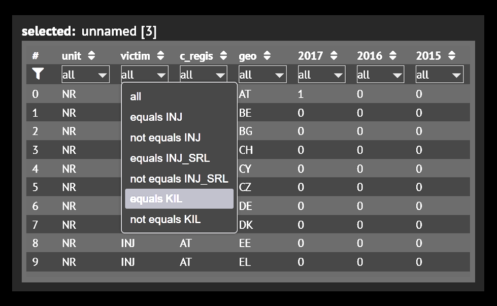
Direct manipulation
- Render preview of the state
- Map choices to UI elements
- Can they all be present?
Mixed-initiative interaction
- Search through choices
- Using heuristic or correctness
- Until \(\text{choose}(\sigma) \in \mathcal{E}\)
The Choose-Your-Own-Adventure Calculus
We need more theories of programming systems
Program synthesis, data wrangling and more!
AI as more than just magical black box?
Tomas Petricek, Jan Liam Verter & Mikolas Fromm